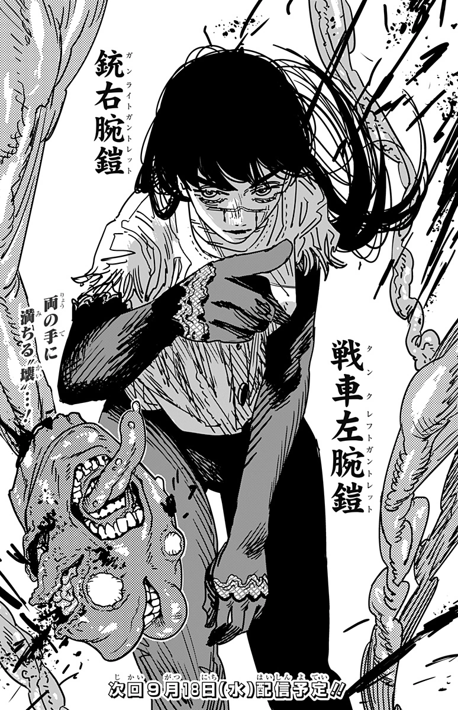

Demonio da escuridão

Yoru (ヨル?) is the villainous deuteragonist of the Academy Saga. She is the War Devil (戦せん争そうの悪あく魔ま Sensō no Akuma?) who embodies the fear of war. She is a member of the Four Horsemen, who now occupies Asa Mitaka's body as a Fiend.
Following her taking over Mitaka's body, Yoru sets out to locate Chainsaw Man, whom secretly attends the Fourth East High School with them. She also coerces Asa into looking for a target to seduce and turn into a weapon. They choose Denji, however they eventually fail and lose their memories. After a meeting with Fami, she becomes a secret member of the Chainsaw Man Church.